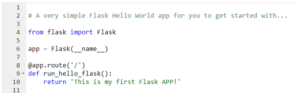
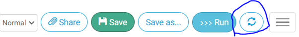
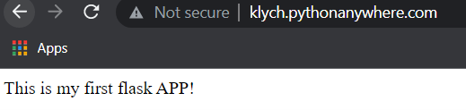
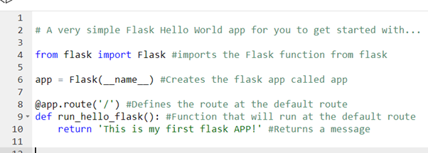

Basic Hello World
Now, as we have a running web server serving an HTML file, it would be cool to find where the file is being served from. To do that, go back to the “Dashboard” and click on the “browse files” button. This is the file system of the web application. Go to mysite/ and then click on the “flask_app.py” file on the right-hand side of the screen, the editor will open up and show you the code that is being executed by the flask server.
The code should look something like this:
# A very simple Flask Hello World app for you to get started with...
from flask import Flask
app = Flask(__name__)
@app.route('/')
def hello_world():
return 'Hello from Flask!'

It is genuinely a really good idea to comment out what each line is, but to do that we need to understand what we are writing. So, the above code consists of 3 things : Importing flask, defining a flask app, and defining a route with a function that will run when the user visits the route address.
So, what do they mean? To use flask, the server functionality, we first need to import it, this can be done by typing “from flask import Flask”, yeah, it doesn’t make much sense, why are we importing Flask from flask? Well, “Flask” is a function inside the “flask” file, we really don’t need to import the whole file using the “import flask” code, but rather we can just import specific functions to suit our needs.
The next line is used to define the flask application, remember when I was saying that we are only importing a single function from flask? Well, now we are using this function to create an app called “app”. The parameter __name__ is just a convenient way to get the import name of the place the app is defined, instead of hard coding it in.
Now, for the final part, I will break this one down into 2 parts. The first part defines the route. What is a route? Well, a route is a mechanism built into flask which handles requests by “routing” them to the correct code. For example, the “/” route is the default route of any web page, if we define a route, for example for “contact us” page and call it “/contactUs” and then, by typing this into the address bar, you will make a request to the flask app to run the code associated with that route, which is nothing at this point. Now, the next part is the actual code that will run when the user accesses the route. First, we define a function, for example to “hello_world():” this function will run the code that will print a message “hello world” or in this case “hello from flask” on the web page. We can change it to whatever we like.
Below I changed the function name to “run_hello_flask():” and set it to print “This is my first flask APP!” to the page of the route, in this case the default route “/”.
# A very simple Flask Hello World app for you to get started with...
from flask import Flask
app = Flask(__name__)
@app.route('/')
def run_hello_flask():
return 'This is my first Flask APP!'
If we go back on the web address of our application, for some reason, nothing changed and we are still getting the “hello from flask” instead of the “This is my first flask APP!”, well, this is because we have not reloaded the web application and it still serves the old code. Within the code, at the top right hand corner, press the 2 circling arrows, this is the reload button:

Now, wait until the loading gif is gone and then access the web page once again or reload the old one.

Cool, now let’s play with some routes! But before we start, lets add some comments to keep track of what we have in the file:
# A very simple Flask Hello World app for you to get started with...
from flask import Flask #imports the Flask function from flask
app = Flask(__name__) #Creates the flask app called app
@app.route('/') #Defines the route at the default route
def hello_world(): #Function that will run at the default route
return 'Hello from Flask!' #Returns a message

This will help us not to get lost in the code.